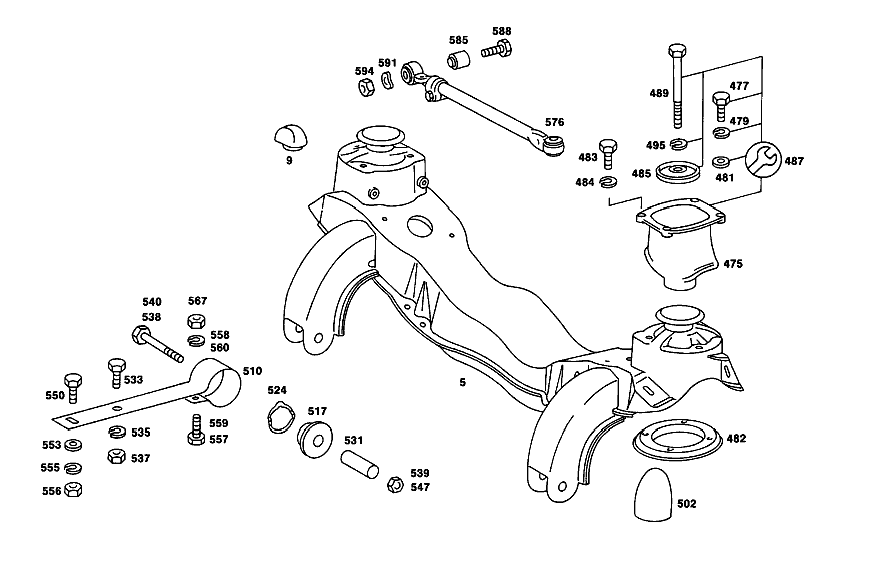

| № | Артикул | Название | Кол. | Примечание | Ограничение |
|---|---|---|---|---|---|
| 5 | A 111 330 30 42 | ПОДРАМНИК ПЕР. МОСТА | 1 | [009] 021;023 FROM CHASSIS 014849 INSTALLED ON 014845 NOT INSTALLED ON 014901 [011] 014 FROM CHASSIS 016976 INSTALLED ON,SEE FOOTN.37 [037] 016926, 016928, 016932, 016959, 016961- 016963, 016965, 016966, 016968- 016970, 016972- 016974. | |
| 9 | A 112 333 01 65 | Резиновый буфер | 4 | ||
| 19 | A 111 330 24 20 | ПОВОРОТНЫЙ КУЛАК | 1 | СЛЕВА [012] UP TO CHASSIS 026650 | |
| 19 | A 111 330 36 20 | ПОВОРОТНЫЙ КУЛАК | 1 | СЛЕВА [013] 021,023 FROM CHASSIS 026651 [017] 014 FROM CHASSIS 026841 INSTALLED ON 026639,026839 [018] UP TO CHASSIS 040634 EXCEPT FOR,SEE FOOTNOTE 38 ALSO INSTALLED ON,SEE FOOTNOTE 39 [038] 040452, 040453, 040486, 040487, 040490, 040496- 040498, 040585- 040594, 040616- 040624, 040632, 040633. [039] 046373- 046379, 046394- 046397, 046400, 046437, 046438, 046440, 046459- 046461, 046463- 046465, 046473- 046479, 046479, 046482, 046484- 046498, 046500- 046564, 046566- 046569, 046572, 046579, 046581, 046587- 046618, 046622- 046624, 046626- 046634, 046648- 046650, 046654- 046660. | |
| 19 | A 111 330 38 20 | ПОВОРОТНЫЙ КУЛАК | 1 | СЛЕВА [019] FROM CHASSIS 040635 ALSO INSTALLED ON,SEE FOOTNOTE 38 EXCEPT FOR,SEE FOOTNOTE 39 [038] 040452, 040453, 040486, 040487, 040490, 040496- 040498, 040585- 040594, 040616- 040624, 040632, 040633. [039] 046373- 046379, 046394- 046397, 046400, 046437, 046438, 046440, 046459- 046461, 046463- 046465, 046473- 046479, 046479, 046482, 046484- 046498, 046500- 046564, 046566- 046569, 046572, 046579, 046581, 046587- 046618, 046622- 046624, 046626- 046634, 046648- 046650, 046654- 046660. | |
| 19 | A 111 330 25 20 | ПОВОРОТНЫЙ КУЛАК | 1 | СПРАВА [012] UP TO CHASSIS 026650 | |
| 19 | A 111 330 37 20 | ПОВОРОТНЫЙ КУЛАК | 1 | СПРАВА [013] 021,023 FROM CHASSIS 026651 [017] 014 FROM CHASSIS 026841 INSTALLED ON 026639,026839 [018] UP TO CHASSIS 040634 EXCEPT FOR,SEE FOOTNOTE 38 ALSO INSTALLED ON,SEE FOOTNOTE 39 [038] 040452, 040453, 040486, 040487, 040490, 040496- 040498, 040585- 040594, 040616- 040624, 040632, 040633. [039] 046373- 046379, 046394- 046397, 046400, 046437, 046438, 046440, 046459- 046461, 046463- 046465, 046473- 046479, 046479, 046482, 046484- 046498, 046500- 046564, 046566- 046569, 046572, 046579, 046581, 046587- 046618, 046622- 046624, 046626- 046634, 046648- 046650, 046654- 046660. | |
| 19 | A 111 330 39 20 | ПОВОРОТНЫЙ КУЛАК | 1 | СПРАВА [019] FROM CHASSIS 040635 ALSO INSTALLED ON,SEE FOOTNOTE 38 EXCEPT FOR,SEE FOOTNOTE 39 [038] 040452, 040453, 040486, 040487, 040490, 040496- 040498, 040585- 040594, 040616- 040624, 040632, 040633. [039] 046373- 046379, 046394- 046397, 046400, 046437, 046438, 046440, 046459- 046461, 046463- 046465, 046473- 046479, 046479, 046482, 046484- 046498, 046500- 046564, 046566- 046569, 046572, 046579, 046581, 046587- 046618, 046622- 046624, 046626- 046634, 046648- 046650, 046654- 046660. | |
| 27 | A 180 332 01 48 | - втулка | 2 | СВЕРХУ | |
| 34 | A 111 332 01 48 | - втулка | 2 | ВНИЗУ | |
| 41 | N 000007 002208 | - Цилиндрический штифт | 2 | ||
| 48 | A 000 997 14 88 | ПРЕСС-МАСЛЁНКА | 2 | [018] UP TO CHASSIS 040634 EXCEPT FOR,SEE FOOTNOTE 38 ALSO INSTALLED ON,SEE FOOTNOTE 39 [038] 040452, 040453, 040486, 040487, 040490, 040496- 040498, 040585- 040594, 040616- 040624, 040632, 040633. [039] 046373- 046379, 046394- 046397, 046400, 046437, 046438, 046440, 046459- 046461, 046463- 046465, 046473- 046479, 046479, 046482, 046484- 046498, 046500- 046564, 046566- 046569, 046572, 046579, 046581, 046587- 046618, 046622- 046624, 046626- 046634, 046648- 046650, 046654- 046660. | |
| 48 | N 071412 008101 | ПРЕСС-МАСЛЁНКА | - | ||
| 48 | N 071412 008102 | Пресс-масленка | 2 | [019] FROM CHASSIS 040635 ALSO INSTALLED ON,SEE FOOTNOTE 38 EXCEPT FOR,SEE FOOTNOTE 39 [038] 040452, 040453, 040486, 040487, 040490, 040496- 040498, 040585- 040594, 040616- 040624, 040632, 040633. [039] 046373- 046379, 046394- 046397, 046400, 046437, 046438, 046440, 046459- 046461, 046463- 046465, 046473- 046479, 046479, 046482, 046484- 046498, 046500- 046564, 046566- 046569, 046572, 046579, 046581, 046587- 046618, 046622- 046624, 046626- 046634, 046648- 046650, 046654- 046660. | |
| 55 | A 111 332 01 06 | Шкворень пов. кулака | 2 | ||
| 61 | A 094 990 95 08 | Пресс-масленка | 2 | ||
| 68 | A 120 332 00 51 | ДИСТАНЦИОННОЕ КОЛЬЦО | 2 | ||
| 73 | A 120 332 01 62 | Прижимная шайба | 2 | ВНИЗУ | |
| 79 | A 120 332 02 62 | Прижимная шайба | 2 | СВЕРХУ | |
| 86 | A 120 332 02 60 | Пылезащитная крышка | 4 | ||
| 93 | A 136 332 08 52 | Компенсационная шайба | 2 | ПО НЕОБХОДИМОСТИ 1.7 MM | |
| 93 | A 136 332 09 52 | Компенсационная шайба | 2 | ПО НЕОБХОДИМОСТИ 1.9 MM | |
| 93 | A 136 332 10 52 | Компенсационная шайба | 2 | ПО НЕОБХОДИМОСТИ 2.1 MM | |
| 93 | A 136 332 00 52 | Компенсационная шайба | 2 | ПО НЕОБХОДИМОСТИ 2.3 MM | |
| 93 | A 136 332 01 52 | Компенсационная шайба | 2 | ПО НЕОБХОДИМОСТИ 2.5mm | |
| 93 | A 136 332 02 52 | Компенсационная шайба | 2 | ПО НЕОБХОДИМОСТИ 2.7 MM | |
| 101 | A 180 333 00 09 | Кронштейн пов. кулака | 2 | ||
| 108 | N 071412 008101 | ПРЕСС-МАСЛЁНКА | - | ||
| 108 | N 071412 008102 | Пресс-масленка | 2 | ||
| 115 | A 181 994 00 15 | Стопорная шайба | 2 | ||
| 122 | N 000934 014019 | Гайка | - | ||
| 122 | N 308673 014001 | Шестигранная гайка | 2 | M14X1.5 | |
| 123 | A 111 586 00 33 | ремкомплект | 2 | ПАЛЕЦ ПОВОР.КУЛАКА | |
| 124 | A 111 330 05 25 | СТУПИЦА ПЕРЕДНЕГО КОЛЕСА | 2 | [020] 014 UP TO CHASSIS 050388 [022] 021,023 UP TO CHASSIS 049939 [017] 014 FROM CHASSIS 026841 INSTALLED ON 026639,026839 [015] 021,023 FROM CHASSIS 020116 | |
| 126 | A 112 401 01 71 | - ШПИЛЬКА КРЕПЛЕНИЯ КОЛЕСА | 10 | [020] 014 UP TO CHASSIS 050388 [022] 021,023 UP TO CHASSIS 049939 [017] 014 FROM CHASSIS 026841 INSTALLED ON 026639,026839 [015] 021,023 FROM CHASSIS 020116 | |
| 130 | A 112 334 05 01 | Ступица переднего колеса | 2 | [023] 021,023 FROM CHASSIS 049940 [021] 014 FROM CHASSIS 050389 | |
| 136 | A 000 981 58 05 | Конический подшипник | 2 | [011] 014 FROM CHASSIS 016976 INSTALLED ON,SEE FOOTN.37 [037] 016926, 016928, 016932, 016959, 016961- 016963, 016965, 016966, 016968- 016970, 016972- 016974. | |
| 142 | A 111 334 00 64 | ТАРЕЛКА | 2 | [011] 014 FROM CHASSIS 016976 INSTALLED ON,SEE FOOTN.37 [037] 016926, 016928, 016932, 016959, 016961- 016963, 016965, 016966, 016968- 016970, 016972- 016974. | |
| 149 | A 003 997 93 46 | Уплотнительное кольцо | 2 | [011] 014 FROM CHASSIS 016976 INSTALLED ON,SEE FOOTN.37 [037] 016926, 016928, 016932, 016959, 016961- 016963, 016965, 016966, 016968- 016970, 016972- 016974. | |
| 154 | A 000 981 59 05 | Кон. роликоподшипник | 2 | [011] 014 FROM CHASSIS 016976 INSTALLED ON,SEE FOOTN.37 [037] 016926, 016928, 016932, 016959, 016961- 016963, 016965, 016966, 016968- 016970, 016972- 016974. | |
| 160 | A 115 334 03 15 | Диск | 2 | ||
| 166 | A 120 334 07 72 | Зажимная гайка | 2 | ||
| 172 | A 120 990 13 20 | болт | 2 | ||
| 175 | A 111 586 03 33 | РЕМКОМПЛЕКТ | 1 | ||
| 175 | A 111 586 02 33 | РЕМКОМПЛЕКТ | 1 | ||
| 175 | A 111 586 01 33 | РЕМКОМПЛЕКТ | 1 | ||
| 177 | A 120 330 01 57 | КОЛПАК КОЛЕСА | 2 | [020] 014 UP TO CHASSIS 050388 [022] 021,023 UP TO CHASSIS 049939 | |
| 177 | A 112 330 00 57 | КОЛПАК КОЛЕСА | - | [023] 021,023 FROM CHASSIS 049940 [021] 014 FROM CHASSIS 050389 | |
| 177 | A 108 334 00 25 | Колпак ступицы колеса | 2 | ||
| 181 | A 111 330 00 51 | РЕМКОМПЛЕКТ | - | ||
| 181 | A 107 330 00 51 | Ремк-т роликоподшипника | 1 | ||
| 184 | N 001474 004001 | ПРОСЕЧНОЙ ШТИФТ | 2 | ON SPECIAL REQUEST,INTERFERENCE SUPPRESSION для RADIO INSTALLATION | |
| 190 | A 110 421 01 12 | ТОРМОЗНОЙ ДИСК | 2 | [017] 014 FROM CHASSIS 026841 INSTALLED ON 026639,026839 | |
| 204 | A 000 990 72 12 | - Винт с цил.гол./6-гр. | 10 | ||
| 206 | A 111 330 00 51 | РЕМКОМПЛЕКТ | - | ||
| 206 | A 107 330 00 51 | Ремк-т роликоподшипника | 1 | ||
| 208 | A 111 586 01 33 | РЕМКОМПЛЕКТ | 1 | ||
| 208 | A 111 586 02 33 | РЕМКОМПЛЕКТ | 1 | ||
| 211 | A 111 330 29 07 | Поперечный рычаг | 1 | ВНИЗУ СЛЕВА [011] 014 FROM CHASSIS 016976 INSTALLED ON,SEE FOOTN.37 [037] 016926, 016928, 016932, 016959, 016961- 016963, 016965, 016966, 016968- 016970, 016972- 016974. | |
| 211 | A 111 330 30 07 | Поперечный рычаг | 1 | СНИЗУ СПРАВА [011] 014 FROM CHASSIS 016976 INSTALLED ON,SEE FOOTN.37 [037] 016926, 016928, 016932, 016959, 016961- 016963, 016965, 016966, 016968- 016970, 016972- 016974. | |
| 218 | A 110 333 00 30 | БОЛТ | 2 | [035] NO LONGER AVAILABLE INDIVIDUALLY,INSTEAD:110 586 02 33 | |
| 218 | A 111 333 03 30 | Палец | 2 | ||
| 224 | A 120 333 01 80 | Уплотнительное кольцо | 4 | ||
| 231 | A 111 333 05 48 | Резьбовая втулка | 2 | 29.9 MM | |
| 236 | A 111 333 04 48 | Резьбовая втулка | 2 | 30.9 MM | |
| 238 | A 110 330 01 18 | Ремк-т опорного пальца | 1 | ||
| 241 | A 108 990 08 01 | болт | - | ||
| 241 | A 108 990 08 01 | болт | 8 | ||
| 248 | N 912004 012100 | Пружинное кольцо | 8 | ||
| 255 | A 000 990 16 51 | ГАЙКА | 8 | ||
| 262 | N 071412 008101 | ПРЕСС-МАСЛЁНКА | - | ||
| 262 | N 071412 008102 | Пресс-масленка | 4 | ||
| 276 | A 181 333 01 80 | Уплотнительное кольцо | 4 | ||
| 283 | A 181 990 00 55 | гайка | 2 | ||
| 290 | A 112 330 31 07 | Поперечный рычаг | 2 | СВЕРХУ | |
| 295 | A 111 333 02 30 | Палец | 2 | ||
| 300 | A 108 990 08 01 | болт | 4 | ||
| 309 | A 110 994 00 10 | Стопорная шайба | 4 | ||
| 316 | N 000433 013005 | Шайба | - | ||
| 316 | N 000433 013010 | Шайба | 4 | ||
| 323 | A 120 333 01 80 | Уплотнительное кольцо | 4 | ||
| 330 | A 120 333 02 48 | Резьбовая втулка | 2 | 29.9 MM | |
| 336 | A 120 333 03 48 | Резьбовая втулка | 2 | 30.9 MM | |
| 343 | A 094 990 95 08 | Пресс-масленка | 4 | ||
| 349 | A 120 333 05 48 | Резьбовая втулка | 2 | ||
| 354 | A 120 333 03 74 | Палец | 2 | ||
| 359 | A 120 990 32 40 | Диск | 2 | ||
| 366 | A 181 333 01 80 | Уплотнительное кольцо | 4 | ||
| 373 | A 120 990 13 40 | Диск | 2 | ||
| 380 | A 120 330 01 87 | Эксцентриковая втулка | 2 | ||
| 387 | N 000127 010200 | Пружинное кольцо | 2 | ||
| 393 | N 000934 010014 | Гайка | - | ||
| 393 | N 304032 010003 | Шестигранная гайка | 2 | M10 | |
| 399 | A 120 333 00 73 | Стопорная шайба | 2 | ||
| 406 | N 000933 006010 | Винт | 2 | ||
| 413 | A 094 990 68 10 | Пружинное кольцо | 2 | ||
| 414 | A 110 330 02 18 | Ремк-т поперечного рычага | 1 | СВЕРХУ | |
| 415 | A 110 330 03 18 | Ремк-т поперечного рычага | 1 | ВНИЗУ | |
| 416 | A 110 330 00 18 | Ремк-т опорного пальца | 1 | СВЕРХУ | |
| 420 | A 110 330 00 03 | ТЯГА СХОЖДЕНИЯ | - | ||
| 420 | A 107 330 01 03 | Поперечная рулевая тяга | 2 | [011] 014 FROM CHASSIS 016976 INSTALLED ON,SEE FOOTN.37 [037] 016926, 016928, 016932, 016959, 016961- 016963, 016965, 016966, 016968- 016970, 016972- 016974. | |
| 434 | A 000 338 42 45 | хомут | 4 | ||
| 436 | N 000960 008011 | БОЛТ | 4 | ДЛЯ СТЯЖНОГО ХОМУТА | |
| 438 | N 000127 008200 | КОЛЬЦО ПРУЖИННОЕ | 4 | ДЛЯ СТЯЖНОГО ХОМУТА | |
| 440 | N 000934 008020 | Гайка | 4 | ДЛЯ СТЯЖНОГО ХОМУТА | |
| 442 | A 000 338 52 10 | - ШАРНИР ШАРОВОЙ | 2 | ПРАВАЯ РЕЗЬБА [417] БОЛЬШЕ НЕ ПОСТАВЛЯЕТСЯ, ЗАКАЗЫВАТЬ КОМПЛЕКТ ПОСТАВКИ [011] 014 FROM CHASSIS 016976 INSTALLED ON,SEE FOOTN.37 [037] 016926, 016928, 016932, 016959, 016961- 016963, 016965, 016966, 016968- 016970, 016972- 016974. | |
| 442 | A 000 338 55 10 | - ШАРНИР ШАРОВОЙ | 2 | ПРАВАЯ РЕЗЬБА [417] БОЛЬШЕ НЕ ПОСТАВЛЯЕТСЯ, ЗАКАЗЫВАТЬ КОМПЛЕКТ ПОСТАВКИ [011] 014 FROM CHASSIS 016976 INSTALLED ON,SEE FOOTN.37 [037] 016926, 016928, 016932, 016959, 016961- 016963, 016965, 016966, 016968- 016970, 016972- 016974. | |
| 442 | A 000 338 50 10 | - ШАРНИР ШАРОВОЙ | 2 | ЛЕВАЯ РЕЗЬБА [417] БОЛЬШЕ НЕ ПОСТАВЛЯЕТСЯ, ЗАКАЗЫВАТЬ КОМПЛЕКТ ПОСТАВКИ [011] 014 FROM CHASSIS 016976 INSTALLED ON,SEE FOOTN.37 [037] 016926, 016928, 016932, 016959, 016961- 016963, 016965, 016966, 016968- 016970, 016972- 016974. | |
| 442 | A 000 338 53 10 | - Шаровой шарнир | 2 | ЛЕВАЯ РЕЗЬБА [417] БОЛЬШЕ НЕ ПОСТАВЛЯЕТСЯ, ЗАКАЗЫВАТЬ КОМПЛЕКТ ПОСТАВКИ [011] 014 FROM CHASSIS 016976 INSTALLED ON,SEE FOOTN.37 [037] 016926, 016928, 016932, 016959, 016961- 016963, 016965, 016966, 016968- 016970, 016972- 016974. | |
| 444 | A 000 338 13 97 | - Эластомерная манжета | 4 | [011] 014 FROM CHASSIS 016976 INSTALLED ON,SEE FOOTN.37 [037] 016926, 016928, 016932, 016959, 016961- 016963, 016965, 016966, 016968- 016970, 016972- 016974. | |
| 446 | A 000 338 09 63 | Стяжное кольцо | 4 | [011] 014 FROM CHASSIS 016976 INSTALLED ON,SEE FOOTN.37 [037] 016926, 016928, 016932, 016959, 016961- 016963, 016965, 016966, 016968- 016970, 016972- 016974. | |
| 446 | A 000 338 10 63 | - Стяжное кольцо | 4 | ||
| 448 | A 000 330 04 85 | Ремк-т шарового шарнира | 1 | TIE ROD BOOT | |
| 467 | A 120 990 01 55 | гайка | 4 | TO 115 330 07 03,08 03 | |
| 467 | N 913002 010010 | Гайка | 4 | TO 107 330 01 03; M10X1 | |
| 469 | N 000094 002008 | ШПЛИНТ | 4 | ||
| 475 | A 111 330 10 75 | САЙЛЕНТ-БЛОК | 2 | КРОНШТ. ПЕРЕДН. МОСТА [008] 021 UP TO CHASSIS 014848 NOT INSTALLED ON 014845 INSTALLED ON 014901 | |
| 475 | A 111 330 15 75 | Резиновая опора | 2 | КРОНШТ. ПЕРЕДН. МОСТА [009] 021;023 FROM CHASSIS 014849 INSTALLED ON 014845 NOT INSTALLED ON 014901 [011] 014 FROM CHASSIS 016976 INSTALLED ON,SEE FOOTN.37 [037] 016926, 016928, 016932, 016959, 016961- 016963, 016965, 016966, 016968- 016970, 016972- 016974. | |
| 477 | N 000933 008153 | Винт | - | M8X25\-8.8 | |
| 477 | N 304017 008034 | Винт с 6-гранной головкой | 8 | САЙЛЕНТ\-БЛОК (РЕЗИНОВАЯ ОПОРА) НА НЕСУЩЕМ ОСНОВАНИИ КУЗОВА; M8X25 [024] 014 UP TO CHASSIS 053447 [026] 021,023 UP TO CHASSIS 053331 | |
| 477 | N 000933 008145 | Винт | 8 | САЙЛЕНТ\-БЛОК (РЕЗИНОВАЯ ОПОРА) НА НЕСУЩЕМ ОСНОВАНИИ КУЗОВА; M8 X 18 [025] 014 FROM CHASSIS 053448 [027] 021,023 FROM CHASSIS 053332 | |
| 479 | N 000127 008203 | Пружинное кольцо | 8 | САЙЛЕНТ\-БЛОК (РЕЗИНОВАЯ ОПОРА) НА НЕСУЩЕМ ОСНОВАНИИ КУЗОВА | |
| 481 | A 108 990 03 40 | Диск | 8 | САЙЛЕНТ\-БЛОК (РЕЗИНОВАЯ ОПОРА) НА НЕСУЩЕМ ОСНОВАНИИ КУЗОВА [024] 014 UP TO CHASSIS 053447 [026] 021,023 UP TO CHASSIS 053331 | |
| 482 | A 111 322 05 84 | ВКЛАДКА | 2 | РЕЗИН. ОПОРА НА ПЕРЕДН. МОСТУ [008] 021 UP TO CHASSIS 014848 NOT INSTALLED ON 014845 INSTALLED ON 014901 [010] 014 UP TO CHASSIS 016975 NOT INSTALLED ON,SEE FOOTN.37 [037] 016926, 016928, 016932, 016959, 016961- 016963, 016965, 016966, 016968- 016970, 016972- 016974. | |
| 483 | N 000933 008131 | Винт | - | ||
| 483 | N 304017 008016 | Винт с 6-гранной головкой | 8 | РЕЗИН. ОПОРА НА ПЕРЕДН. МОСТУ; M8X16 [008] 021 UP TO CHASSIS 014848 NOT INSTALLED ON 014845 INSTALLED ON 014901 [010] 014 UP TO CHASSIS 016975 NOT INSTALLED ON,SEE FOOTN.37 [037] 016926, 016928, 016932, 016959, 016961- 016963, 016965, 016966, 016968- 016970, 016972- 016974. | |
| 484 | N 000127 008200 | КОЛЬЦО ПРУЖИННОЕ | 8 | РЕЗИН. ОПОРА НА ПЕРЕДН. МОСТУ [008] 021 UP TO CHASSIS 014848 NOT INSTALLED ON 014845 INSTALLED ON 014901 [010] 014 UP TO CHASSIS 016975 NOT INSTALLED ON,SEE FOOTN.37 [037] 016926, 016928, 016932, 016959, 016961- 016963, 016965, 016966, 016968- 016970, 016972- 016974. | |
| 485 | A 111 331 06 45 | Упорная тарелка | 2 | РЕЗИН. ОПОРА НА ПЕРЕДН. МОСТУ [009] 021;023 FROM CHASSIS 014849 INSTALLED ON 014845 NOT INSTALLED ON 014901 [011] 014 FROM CHASSIS 016976 INSTALLED ON,SEE FOOTN.37 [037] 016926, 016928, 016932, 016959, 016961- 016963, 016965, 016966, 016968- 016970, 016972- 016974. | |
| 487 | A 111 586 06 33 | РЕМКОМПЛЕКТ | 1 | РЕЗИН. ОПОРА НА ПЕРЕДН. МОСТУ | |
| 489 | N 000960 012095 | Винт | 2 | РЕЗИН. ОПОРА НА ПЕРЕДН. МОСТУ [009] 021;023 FROM CHASSIS 014849 INSTALLED ON 014845 NOT INSTALLED ON 014901 [011] 014 FROM CHASSIS 016976 INSTALLED ON,SEE FOOTN.37 [037] 016926, 016928, 016932, 016959, 016961- 016963, 016965, 016966, 016968- 016970, 016972- 016974. | |
| 495 | N 000127 012200 | Пружинное кольцо | 2 | РЕЗИН. ОПОРА НА ПЕРЕДН. МОСТУ [009] 021;023 FROM CHASSIS 014849 INSTALLED ON 014845 NOT INSTALLED ON 014901 [011] 014 FROM CHASSIS 016976 INSTALLED ON,SEE FOOTN.37 [037] 016926, 016928, 016932, 016959, 016961- 016963, 016965, 016966, 016968- 016970, 016972- 016974. | |
| 502 | A 111 333 02 65 | Резиновый буфер | 4 | ПОПЕРЕЧН. РЫЧАГ НИЖН. | |
| 502 | A 111 333 07 65 | РЕЗИНОВЫЙ УПОР | 4 | ПОПЕРЕЧН. РЫЧАГ НИЖН. [040] EXPORT,ON SPECIAL REQUEST | |
| 510 | A 112 331 00 12 | Листовая рессора | 2 | ||
| 517 | A 110 322 15 85 | Резиновая опора | 4 | для LEAF SPRING [011] 014 FROM CHASSIS 016976 INSTALLED ON,SEE FOOTN.37 [037] 016926, 016928, 016932, 016959, 016961- 016963, 016965, 016966, 016968- 016970, 016972- 016974. | |
| 524 | A 110 322 02 76 | Проставочное кольцо | 4 | [011] 014 FROM CHASSIS 016976 INSTALLED ON,SEE FOOTN.37 [037] 016926, 016928, 016932, 016959, 016961- 016963, 016965, 016966, 016968- 016970, 016972- 016974. | |
| 531 | A 111 332 00 53 | Проставочная трубка | 2 | [011] 014 FROM CHASSIS 016976 INSTALLED ON,SEE FOOTN.37 [037] 016926, 016928, 016932, 016959, 016961- 016963, 016965, 016966, 016968- 016970, 016972- 016974. | |
| 533 | N 000933 008145 | Винт | 4 | РЕЗИН. ОПОРА НА ЛИСТ. РЕССОРЕ; M8 X 18 | |
| 535 | N 000127 008203 | Пружинное кольцо | 4 | РЕЗИН. ОПОРА НА ЛИСТ. РЕССОРЕ | |
| 537 | N 000934 008010 | Гайка | - | ||
| 537 | N 304032 008006 | Шестигранная гайка | 4 | РЕЗИН. ОПОРА НА ЛИСТ. РЕССОРЕ; M8 | |
| 540 | N 000960 016105 | Винт | 2 | LEAF SPRING TO FRONT SUBFRAME; M16 X 1.5 X 80 \-8.8 [011] 014 FROM CHASSIS 016976 INSTALLED ON,SEE FOOTN.37 [037] 016926, 016928, 016932, 016959, 016961- 016963, 016965, 016966, 016968- 016970, 016972- 016974. | |
| 547 | N 000985 016001 | ГАЙКА | 2 | LEAF SPRING TO FRONT SUBFRAME [011] 014 FROM CHASSIS 016976 INSTALLED ON,SEE FOOTN.37 [037] 016926, 016928, 016932, 016959, 016961- 016963, 016965, 016966, 016968- 016970, 016972- 016974. | |
| 553 | N 000125 015004 | ШАЙБА | 2 | РЕГУЛИРОВКА ПРОДОЛЬНОГО УГЛА НАКЛОНА ШКВОРНЯ (ОСИ ПОВОРОТА УПРАВЛЯЕМЫХ КОЛЁС) [011] 014 FROM CHASSIS 016976 INSTALLED ON,SEE FOOTN.37 [037] 016926, 016928, 016932, 016959, 016961- 016963, 016965, 016966, 016968- 016970, 016972- 016974. | |
| 560 | N 912004 014100 | Пружинное кольцо | 4 | LEAF SPRING AND TORSION BAR TO FRAME FLOOR UNIT [011] 014 FROM CHASSIS 016976 INSTALLED ON,SEE FOOTN.37 [037] 016926, 016928, 016932, 016959, 016961- 016963, 016965, 016966, 016968- 016970, 016972- 016974. | |
| 567 | N 000934 014019 | Гайка | - | ||
| 567 | N 308673 014001 | Шестигранная гайка | 4 | LEAF SPRING AND TORSION BAR TO FRAME FLOOR UNIT; M14X1.5 [011] 014 FROM CHASSIS 016976 INSTALLED ON,SEE FOOTN.37 [037] 016926, 016928, 016932, 016959, 016961- 016963, 016965, 016966, 016968- 016970, 016972- 016974. | |
| 576 | A 111 330 03 30 | Направляющая штанга | 1 | LATERAL SUPPORT [011] 014 FROM CHASSIS 016976 INSTALLED ON,SEE FOOTN.37 [037] 016926, 016928, 016932, 016959, 016961- 016963, 016965, 016966, 016968- 016970, 016972- 016974. | |
| 585 | A 000 988 33 10 | - Сайлент-блок | 2 | [011] 014 FROM CHASSIS 016976 INSTALLED ON,SEE FOOTN.37 [037] 016926, 016928, 016932, 016959, 016961- 016963, 016965, 016966, 016968- 016970, 016972- 016974. | |
| 588 | N 000960 012225 | Винт | 2 | GUIDE ROD TO BODY FLOOR AND TO FRONT SUBFRAME [011] 014 FROM CHASSIS 016976 INSTALLED ON,SEE FOOTN.37 [037] 016926, 016928, 016932, 016959, 016961- 016963, 016965, 016966, 016968- 016970, 016972- 016974. | |
| 591 | N 912004 012100 | Пружинное кольцо | 2 | GUIDE ROD TO BODY FLOOR AND TO FRONT SUBFRAME [011] 014 FROM CHASSIS 016976 INSTALLED ON,SEE FOOTN.37 [037] 016926, 016928, 016932, 016959, 016961- 016963, 016965, 016966, 016968- 016970, 016972- 016974. | |
| 594 | N 000934 012023 | Гайка | - | ||
| 594 | N 308673 012002 | Шестигранная гайка | 2 | GUIDE ROD TO BODY FLOOR AND TO FRONT SUBFRAME [011] 014 FROM CHASSIS 016976 INSTALLED ON,SEE FOOTN.37 [037] 016926, 016928, 016932, 016959, 016961- 016963, 016965, 016966, 016968- 016970, 016972- 016974. | |
| A 111 330 27 42 | ПОДРАМНИК ПЕР. МОСТА | - | [029] FOR RUBBER MOUNTINGS 110 322 12 85-110 322 18 85 SEE GROUP 32 [008] 021 UP TO CHASSIS 014848 NOT INSTALLED ON 014845 INSTALLED ON 014901 | ||
| A 111 330 26 98 | ПЕРЕДНИЙ МОСТ | - | [012] UP TO CHASSIS 026650 | ||
| A 111 330 28 98 | ПЕРЕДНИЙ МОСТ | - | [020] 014 UP TO CHASSIS 050388 [022] 021,023 UP TO CHASSIS 049939 | ||
| A 111 330 24 98 | ПЕРЕДНИЙ МОСТ | - | [013] 021,023 FROM CHASSIS 026651 [017] 014 FROM CHASSIS 026841 INSTALLED ON 026639,026839 | ||
| A 111 330 30 98 | ПЕРЕДНИЙ МОСТ | - | |||
| A 110 330 14 98 | ПЕРЕДНИЙ МОСТ | 1 | СЛЕВА, С ДИСКОВЫМ ТОРМОЗНЫМ МЕХАНИЗМОМ | ||
| A 111 330 27 98 | ПЕРЕДНИЙ МОСТ | - | [012] UP TO CHASSIS 026650 | ||
| A 111 330 29 98 | ПЕРЕДНИЙ МОСТ | - | [020] 014 UP TO CHASSIS 050388 [022] 021,023 UP TO CHASSIS 049939 | ||
| A 111 330 25 98 | ПЕРЕДНИЙ МОСТ | - | [013] 021,023 FROM CHASSIS 026651 [017] 014 FROM CHASSIS 026841 INSTALLED ON 026639,026839 | ||
| A 111 330 31 98 | ПЕРЕДНИЙ МОСТ | - | |||
| A 110 330 15 98 | ПЕРЕДНИЙ МОСТ | 1 | СПРАВА, С ДИСКОВЫМ ТОРМОЗНЫМ МЕХАНИЗМОМ | ||
| A 111 330 02 25 | СТУПИЦА ПЕРЕДНЕГО КОЛЕСА | - | [014] UP TO CHASSIS 020115 | ||
| A 111 421 04 12 | ТОРМОЗНОЙ ДИСК | - | [014] UP TO CHASSIS 020115 | ||
| A 123 586 00 42 | РЕМКОМПЛЕКТ | 2 | ТОРМОЗНОЙ ДИСК К СТУПИЦЕ КОЛЕСА [412] БОЛЬШЕ НЕ ПОСТАВЛЯЕТСЯ, ЗАКАЗЫВАТЬ ОТДЕЛЬНЫЕ ДЕТАЛИ | ||
| A 120 333 04 74 | Палец | 2 | |||
| N 000094 003007 | ШПЛИНТ | 2 | [402] БОЛЬШЕ НЕ ПОСТАВЛЯЕТСЯ | ||
| A 115 330 07 03 | ТЯГА СХОЖДЕНИЯ | - | |||
| A 110 330 00 03 | ТЯГА СХОЖДЕНИЯ | - | |||
| A 115 330 08 03 | ТЯГА СХОЖДЕНИЯ | - | |||
| A 000 338 15 15 | - ТЯГА СХОЖДЕНИЯ | - | |||
| A 115 330 07 03 | - ТЯГА СХОЖДЕНИЯ | - | TO 111 330 00 03 [011] 014 FROM CHASSIS 016976 INSTALLED ON,SEE FOOTN.37 [037] 016926, 016928, 016932, 016959, 016961- 016963, 016965, 016966, 016968- 016970, 016972- 016974. [402] БОЛЬШЕ НЕ ПОСТАВЛЯЕТСЯ | ||
| A 000 338 19 10 | - ШАРНИР ШАРОВОЙ | - | |||
| A 000 338 20 10 | - ШАРНИР ШАРОВОЙ | - |
Позиций: 176 · подписано на схемах: 153 · колесо — плавный зум в курсор, перетаскивание — пан, двойной клик — зум, клик по артикулу — скопировать.